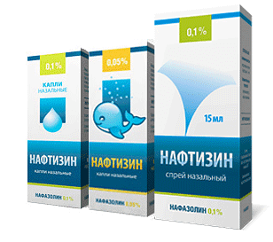

Не устаю удивляться на российские инструкции к препаратам, сравнивая их с инструкциями зарубежными. У нас Омепразол запрещен до 18 лет (за рубежом разрешен с 1 месяца), ушные капли с ципрофлоксацином запрещены до 18 лет (за рубежом разрешены с 6-12 месяцев), но зато сосудосуживающих капель с рождения разрешено аж два вида: с оксиметазолином и с фенилэфрином (за рубежом признаны слишком токсичными и запрещены до 2, а то и до 5 лет). Но оксиметазолин и фенилэфрин – это только половина беды.
У нас до сих пор в свободной продаже капли Нафтизина, родители применяют их с самого раннего возраста (они значительно дешевле более безопасных аналогов), и вот это действительно страшно.

В зависимости от попавшей дозы Нафтизина тяжесть отравления может быть разной – от небольших неопасных симптомов до быстрой гибели ребенка. Ситуация усугубляется тем, что родители не понимают, насколько отравление Нафтизином опасно: они спрячут бабушкины таблетки от давления, даже безобидные мамины гормональные контрацептивы спрячут, а вот Нафтизин оставят на виду, это же всего лишь капельки в носик. Погуглите «отравление Нафтизином – впечатлитесь, сколько топиков на форумах, сколько статей и видеоблогов врачей на эту тему, сколько случаев гибели детей.
Носовые капли Нафтизин – это совершенно адский препарат, устаревший и токсичный.
Никогда не применяйте Нафтизин, потому что он:
1) Вызывает симптом «рикошета» – неплохо снимает носовой отек, но после окончания действия (через 2–3 часа) нос отекает еще сильнее, это ведет к слишком частому закапыванию и лекарственному риниту или даже отравлению.
2) Вызывает лекарственный (атрофический) ринит уже за 1–2 недели постоянного применения; обычно это удел брутальных мужиков, которым «недосуг по врачам ходить», я «ужкакнибудьсам», а потом выясняется, что он годами капает Нафтизин или Ксилен, и буквально не может перестать, зависит от него, как наркоман.
3) Но главное, Нафтизин легко вызывает отравление при закапывании в нос, а учитывая дешевые упаковки, в которых он продается (пенициллиновый флакончик с легко открывающейся пробкой или пластмассовая «давилка»), его легко выпить ребенку или случайно плеснуть в нос слишком много.
Дорогие родители,
бойтесь носовых сосудосуживающих капель!
Даже относительно безобидные капли с фенилэфрином – Назол Бэби и Виброцил, ксилометазолином – Галазолин и оксиметазолином – Називин способны быстро вызвать опасное отравление. А уж носовые капли с нафазолином – Нафтизин и Санорин у современного врача стоят в одном ассоциативном ряду с крысиным ядом.
В некоторых исключительных случаях их можно применять в глаза, но авторитетный лекарственный справочник drugs.com пишет о Нафтизине следующие слова: «Капли нафазолина предназначены для использования только в офтальмологии. Избегайте контакта со слизистой носа, рта или другими слизистыми оболочками»
ПРИЗНАКИ ОТРАВЛЕНИЯ СОСУДОСУЖИВАЮЩИМИ КАПЛЯМИ
Запомните признаки отравления сосудосуживающими каплями:
✗ неадекватная сонливость;
✗ редкий пульс;
✗ бледность;
✗ холодный пот;
✗ заторможенность ребенка.
Если вы по ошибке закапали ребенку препарат во взрослой концентрации, или в нос опрокинулось большое количество препарата, или ребенок выпил хотя бы небольшое количество сосудосуживающих капель – немедленно вызывайте скорую помощь; без экстренной помощи ребенок может погибнуть в считаные часы.
(Сергей Бутрий "Здоровье ребенка: современный подход")